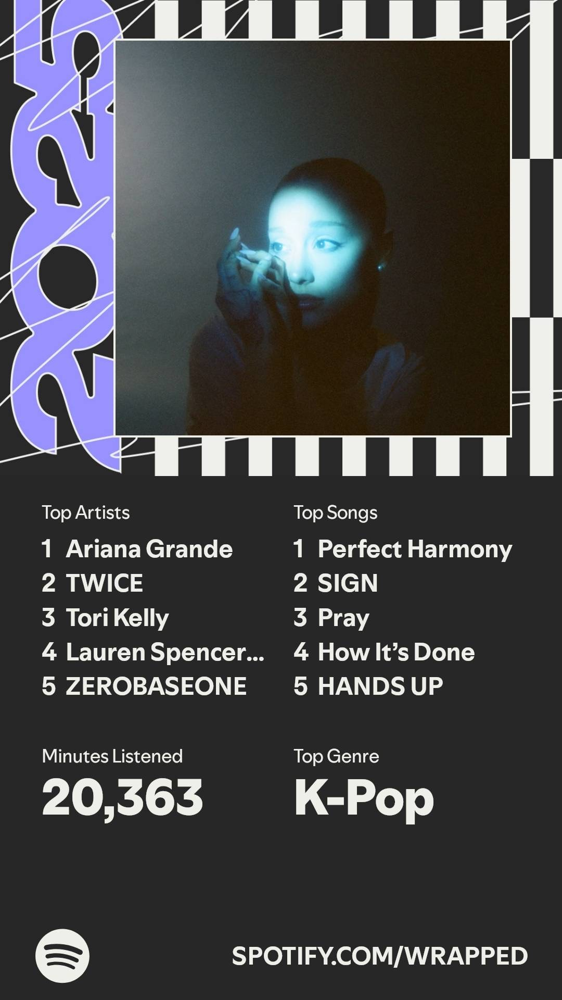

COLLECTION / 03
Songs / Artists
The songs I keep on repeat and the artists I listen to most.
ARIES ARCADE / LISTENING RECAP
My Spotify Wrapped
- Minutes Listened
- 20,363
- Top Genre
- K-Pop
Top Artists
- Ariana Grande
- TWICE
- Tori Kelly
- Lauren Spencer Smith
- ZEROBASEONE
Top Songs
- Perfect Harmony
- SIGN
- Pray
- How It’s Done
- HANDS UP

